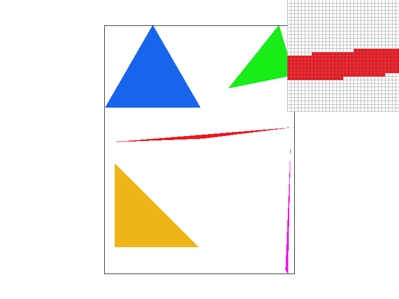
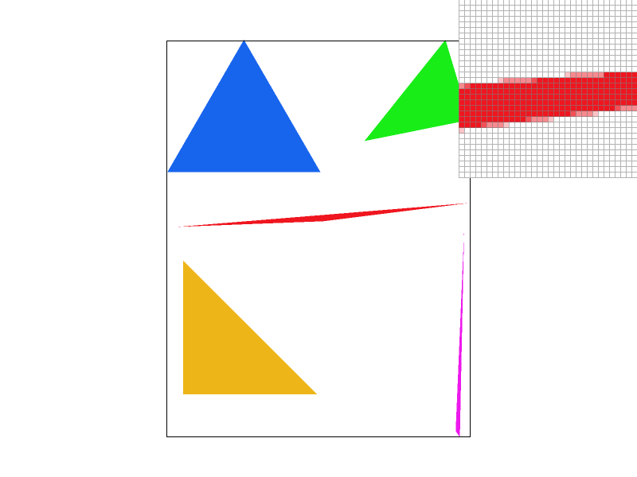
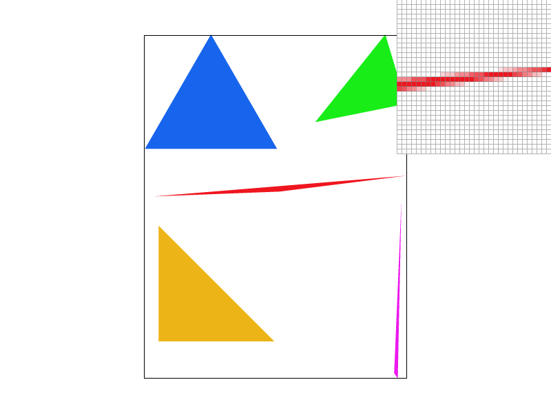
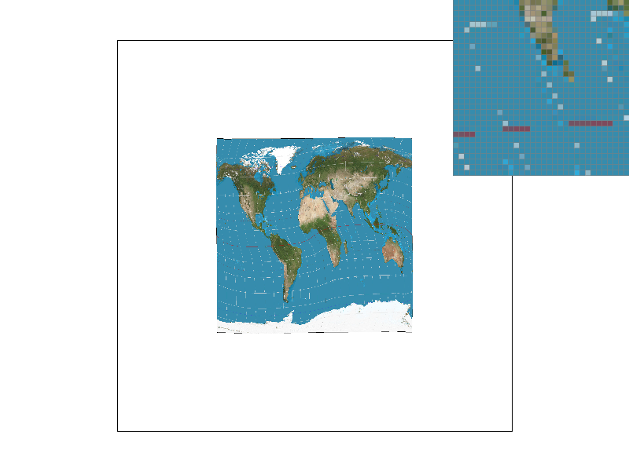

CS184/284A Spring 2025 Homework 1 Write-Up
Names: Hannes Rodriguez
Link to webpage: https://cal-cs184-student.github.io/hw-webpages-monster/hw1/index.html
Link to GitHub repository: (TODO) https://github.com/cal-cs184-student/sp25-hw1-sigh.git
Overview
In this hw, I built a triangle rasterizer with supersampling to handle antialiasing, the ability to perform transforms, and multiple different methods for level and pixel sampling. I thought it was interesting to see what steps of the rasterization pipeline afffected different types of aliasing issues. I thought it was especially informative to see how different sampling combinations affected the final image, with the different methods contributing to making the image softer or sharper or helping with flickering at a distance. It was fun mixing and matching to see which combination had the best image.Task 1: Drawing Single-Color Triangles
I first find the smallest box that fully contains the triangle, calculating the min and max x and y values from the vertices of the triangles. This allows me to only check the pixels within the rectangle instead of the whole frambuffer. I then make and use an edge function to check if the points are inside or outside the triangle. To make sure the winding order doesn't matter, if the vertices of the triangle give negative values, two of the vertices are swapped so the orientation is correct. Then, to see if each pixel in the bounding box has to be filled, I check to see if the sample point at its center is inside the triangle by checking that edge function is non negative at that point for all three edges of the triangle. I also use extra checks for the edge cases where a pixel if a pixel is on the edge the function only is positive sometimes to make sure it is always correctly filling the edges. If the point is inside the triangle, it is filled. This algorithm only checks the pixels of the bounding box, so it as efficient as checking each pixel in the bounding box because they are the same thing.Task 2: Antialiasing by Supersampling
In order to implement the supersampling, I expanded the sample_buffer data structure to store multiple samples per pixel. First, I used set_sample_rate and set_framebuffer_target to resize the sample buffer to accomodate the correct sample rate, with the buffer scaling by height x width x sample rate. Then, in rasterize_triangle, I made an evenly spaced grid of sample points within each pixel based on the sample rate and performed the edge function on each sample to determine whether or not it was in the triangle so that there is a higher resolution image of the triangle in the sample buffer. Using this method, I see what fraction of a pixel is inside of the triangle, and can then use resolve_framebuffer to average the samples of each pixel to get the final pixel color. I modified the buffer and updated the memory management in set_sample_rate, set_framebuffer_target, and clear_buffers to store more samples per pixel, created a uniform grid of samples in each pixel with loops to process each sample, updated fill_pixel to fill all samples with the same color, and put averging into the resolve step so that it can turn multiple samples into one final color.|

|

|
|

|
Task 3: Transforms
I didn't change the color of my block guy, but I shifted his arms slightly closer together and reoriented them to look like he is flexing his muscles by angling the upper arms slightly downward and turning the forearms up and in.Task 4: Barycentric coordinates
Barycentrix coordinates are a coordinate system that describes any point as a weighted average of the vertices of a triangle. For any point, there is a weight associated with each vertex of the triangle, with the 3 weights adding to 1. This means that any point is a unique combination of the three vertices of the triangle, allowing for values to blend smoothly together. For example, if different vertices of a triangle are associated with different colors, then since the weights smoothly transition across the triangle, the colors on the triangle will transition smoothly between the colors based on the position on the triangle.Task 5: "Pixel sampling" for texture mapping
Pixel sampling is the process of determining what color from a texture map will be applied to a point on a triangle. We need to have mappings between the positions of the triangle and the texture map, which is defined by by the (u,v) texure coordinates associated with each vertex. To implement this, I first calculated the barycentric coordinates for each sample point to see the influence each vertex has on a particular point. The barycentric coordinates are used to interpolate the texture coordinates across the triangle. To determine what color needs to be sampled from the texture, nearest neighbor sampling will simply convert the (u,v) coordinates to the texture space, then round to the nearest integer to get the closest texel, which is used for the color. Bilinear sampling on the other hand, interpolates between the 4 nearest texels by calculating the fractional distaance to the texels and doing linear interpolations horizontally, then vertically. We can clearly see a situation in which bilinear sampling's smoother appearance outperforms nearest sampling when looking athte lines on the distorted maps, where nearest sampling shows significant banding at both 1 and 16 supersampling rates, whereas the bilinear sampling does a much better job of making the lines of latitude and longitude look continuous. There tends to be large differences in the two methods when textures are stretched or rotated and distorted because the hard edges of the nearest sampling method become more noticeable with larger texels and when continuous objects bend, while the smooth transitions of the bilinear method allow for these things to remain looking natural.|

|

|

|

|